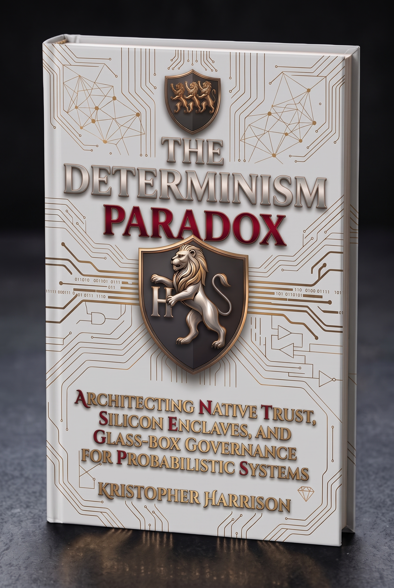

01 • Launch Trailer
Greenfield Spec
THE DETERMINISM PARADOX
Architecting Native Trust, Silicon Enclaves, and Glass-Box Governance for Probabilistic Systems
Stop retrofitting legacy controls onto probabilistic systems. Explore the five-part greenfield engineering specification built for enterprise chief architects, principal systems engineers, and auditors.
02 • First Edition
Print & Digital
Volume 05 • Greenfield Specification
The Determinism Paradox

Actionable Chief Architect Blueprint
Proactive native trust architectures, hardware-rooted silicon enclaves, and glass-box runtime assurance engineered from day one.
03 • Architecture
5-Part Format
Structure of This Book
Five-Part Chief Architect Specification
Moving beyond reactive threat playbooks, every chapter executes five standardized native engineering phases:
- 01. Legacy Integration vs. Native Inception Retire obsolete retrofits—static service accounts, contractual cloud privacy tiers, and manual review queues—to engineer natively around AI.
- 02. Reference Topology & Structural Patterns Formal multi-enclave trust zones, data schemas, and quantitative laws written in rigorous prose ready for System Design Documents.
- 03. Systems Engineering & Infrastructure Spec Step-by-step greenfield builds covering protocol headers, middleware proxies, identity tokens, hardware attestation, and admission control.
- 04. Continuous Assurance & Runtime Governance Self-validating architectures wiring automated telemetry, deterministic output schemas, drift monitors, and HITL state machines into daily ops.
- 05. Executive Synthesis & Credential Alignment Translates controls into boardroom capital strategy, TCO optimization, fiduciary risk metrics, and global AI security certification domains.
04 • Official Publisher
Harrison Arbitrage
Harrison Arbitrage Publishing